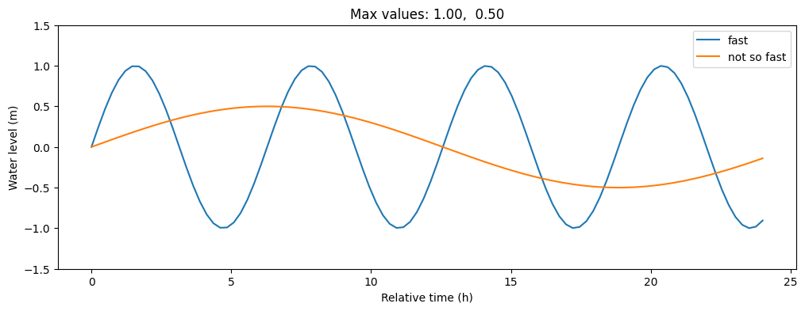
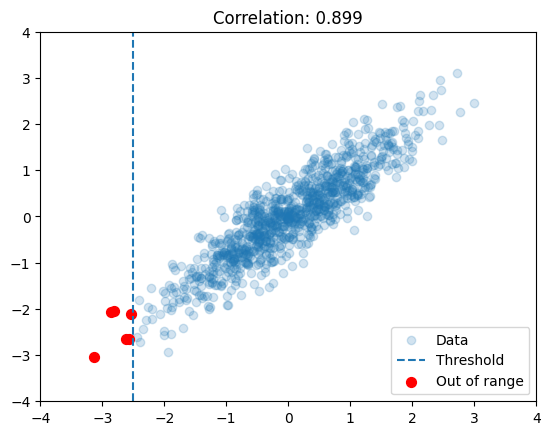
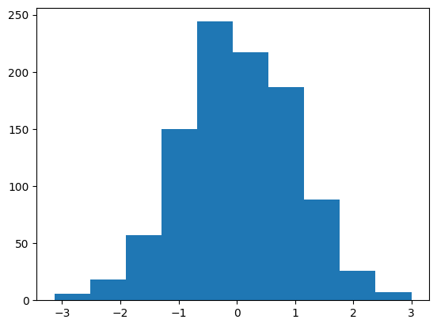

Matplotlib#
There are many packages for plotting in Python but Matplotlib is the most widely used.
Plotting is not covered in detail in this course, but below are some examples to get started. There are plenty of other examples on the Matplotlib Gallery
Line plots (e.g. timeseries)#
import numpy as np
import matplotlib.pyplot as plt
x = np.linspace(0, 24, num=100)
y1 = np.sin(x)
plt.plot(x,y1)
[<matplotlib.lines.Line2D at 0x7fc035996890>]
Great, let’s add some common things, like legend and axis labels.
y2 = 0.5*np.sin(x/4)
plt.plot(x,y1, label='fast')
plt.plot(x,y2, label='not so fast')
plt.ylim(-1.5,1.5)
plt.legend(loc='upper right')
plt.title(f"Max values: {y1.max():.2f}, {y2.max():.2f}")
plt.ylabel("Water level (m)")
plt.xlabel("Relative time (h)")
Text(0.5, 0, 'Relative time (h)')

Wow, the plot looks great, but it is too narrow. (Figsize units)
And how do I save it?
plt.subplots(figsize=(12,4)) # size in inches
y2 = 0.5*np.sin(x/4)
plt.plot(x,y1, label='fast')
plt.plot(x,y2, label='not so fast')
plt.ylim(-1.5,1.5)
plt.legend(loc='upper right')
plt.title(f"Max values: {y1.max():.2f}, {y2.max():.2f}")
plt.ylabel("Water level (m)")
plt.xlabel("Relative time (h)")
plt.savefig("sine_functions.png")

Scatter plot#
np.random.seed(0)
X = np.random.multivariate_normal(mean=[0,0],
cov=[[1.0, 0.9],[0.9, 1.0]],
size=1000)
x = X[:,0]
y = X[:,1]
plt.scatter(x,y)
plt.ylabel("Some variable")
plt.xlabel("The other variable")
Text(0.5, 0, 'The other variable')
Many points on top of each other…
plt.scatter(x,y, alpha=0.2)
plt.ylabel("Some variable")
plt.xlabel("The other variable")
Text(0.5, 0, 'The other variable')
plt.scatter(x,y, alpha=0.2, label='Data')
plt.axvline(-2.5, linestyle='--', label="Threshold")
plt.scatter(x[x<-2.5],y[x<-2.5], s=50, c='red', label='Out of range')
plt.xlim(-4,4)
plt.ylim(-4,4)
r = np.corrcoef(x,y)[0,1]
plt.title(f"Correlation: {r:.3f}")
plt.legend();

Histogram#
plt.hist(x, bins=10); # semi-colon hides output

plt.hist(x, cumulative=True, bins=100, density=True, color='gray')
plt.title("Cumulative histogram")
plt.axhline(1.0, linestyle='--',c='black')
plt.ylim(-.1,1.1)
plt.text(-3,.95,"It doesn't get higher than this")
Text(-3, 0.95, "It doesn't get higher than this")